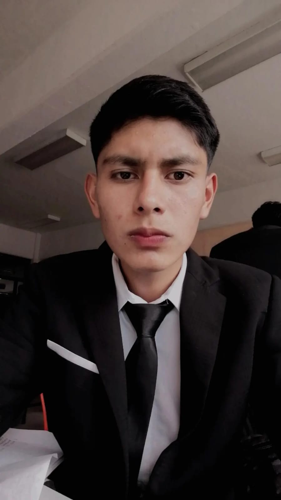
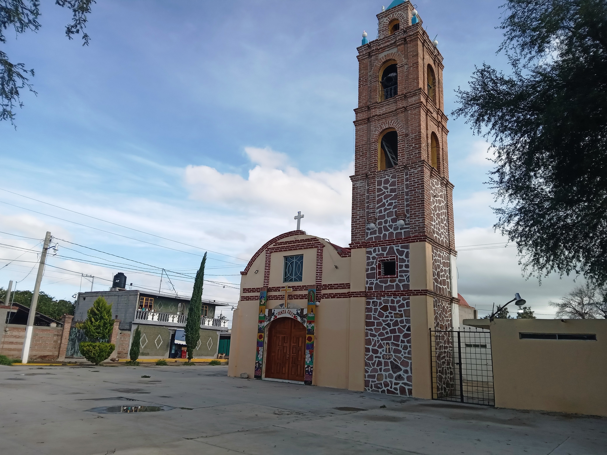

Mi nombre es Diego Lozano Camargo y soy una persona muy calmada, tranquila y un poco seria. Además, me considero amable y respetuoso con los demás. Me gusta hacer las cosas a mi manera, ya que encuentro satisfacción en seguir mis propias ideas y enfoques. Disfruto de mi vida lo mejor que puedo, encontrando alegría en las pequeñas cosas y buscando momentos de felicidad en cada día. Aunque valoro la compañía de mis amigos, también disfruto de momentos de soledad en casa. En ocasiones, encuentro paz y tranquilidad al estar solo, lo cual me brinda la oportunidad de reflexionar, relajarme y recargar energías. No obstante, también disfruto de la diversión y el entretenimiento con mis amigos. Me encanta compartir momentos de risas, aventuras y experiencias con ellos, creando recuerdos inolvidables. Debo admitir que, en ocasiones, puedo ser un poco egocéntrico. Dependiendo del día y las circunstancias, puedo centrarme en mis propios deseos y necesidades. Sin embargo, siempre trato de ser consciente de los demás y de practicar la empatía. Reconozco que la vida no solo se trata de mí, sino también de las personas que me rodean, y estoy dispuesto a aprender y crecer como individuo.
Estudio TICs porque durante mi tiempo en la preparatoria, me sumergí en la fascinante carrera de programación. Fue en ese momento cuando me di cuenta de la increíble capacidad que tiene la tecnología para transformar y mejorar diversos aspectos de nuestra vida cotidiana. La programación me cautivó con su capacidad para dar vida a ideas creativas y resolver problemas de manera eficiente. La experiencia en la carrera de programación despertó en mí un interés profundo por las Tecnologías de la Información y la Comunicación (TIC). La versatilidad de las TICs y su impacto en la sociedad me motivaron a seguir explorando este apasionante campo de estudio. Quería profundizar mis conocimientos y comprender más a fondo cómo las tecnologías emergentes pueden moldear el futuro. Lo que más me gusta de las TICs es la amplitud de su alcance. Desde el desarrollo de software hasta la gestión de redes y la innovación tecnológica, cada aspecto ofrece oportunidades emocionantes para aprender y crecer. La rápida evolución de las TICs me desafía constantemente a mantenerme actualizado y a adaptarme a nuevas tendencias y herramientas.
Vengo del municipio de San Salvador Hgo, de un hermoso y acogedor pueblo llamado Leandro Valle. Aunque es un lugar pequeño, tiene un encanto especial que siempre me ha cautivado. Desde que era niño, pasaba la mayor parte de mi tiempo libre jugando con mis amigos en las estrechas calles del pueblo. Recuerdo con cariño las tardes interminables en las que jugábamos a las escondidas, corriendo entre las casas coloridas y estrechas. Cada esquina y rincón del pueblo era nuestro escenario de aventuras, y la emoción de esconderse y encontrar a nuestros compañeros era simplemente inigualable. Esos juegos llenos de risas y complicidad dejaron huellas imborrables en mi corazón. Pero uno de los lugares más especiales para mí era la cancha de fútbol del pueblo. Allí pasábamos horas y horas, pateando el balón y disfrutando de la pasión por el deporte. Los partidos amistosos eran una verdadera fiesta, con vecinos y amigos animando desde las gradas improvisadas. La cancha era nuestro punto de encuentro, donde compartíamos risas, competencia y amistad.
